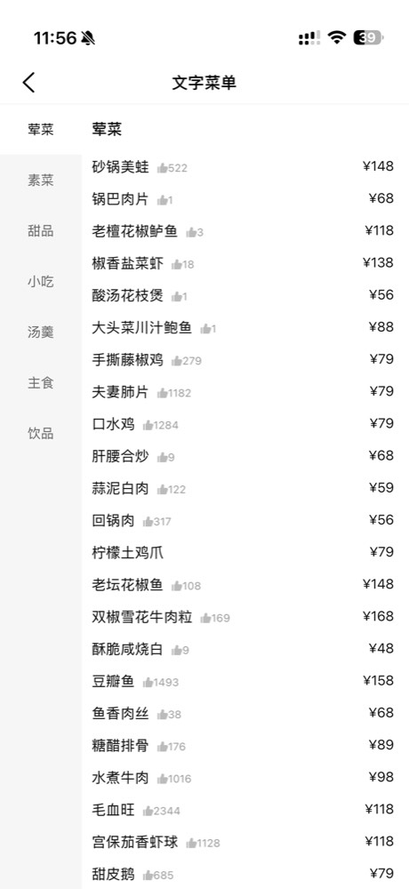

Dish info is AI-estimated from typical recipes, not actual kitchen ingredients. Chinese kitchens commonly use peanut and sesame oil. If you have severe allergies, always confirm with staff.
10 seconds — we'll flag and fold dishes for you. You can change this anytime.
